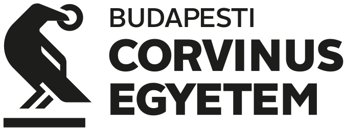

2026
Mesterséges intelligencia megoldásokat fejlesztő adat- és rendszertudományi szakember
Pannon Egyetem - Mérnöki Kar
Ezeken az oldalakon néhány adattudományi, illetve mesterséges intelligenciára épülő elemzési projektem eredményét osztom meg.
Pannon Egyetem - Mérnöki Kar
Eötvös Loránd Tudományegyetem

Budapesti Corvinus Egyetem - Corvinus Business School
ELTE - Társadalomtudományi Kar